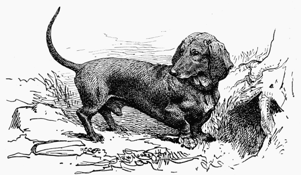
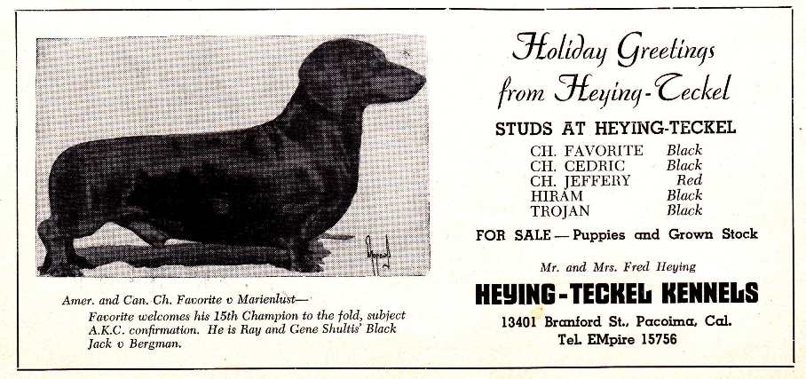
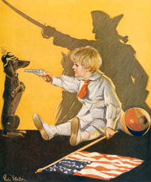
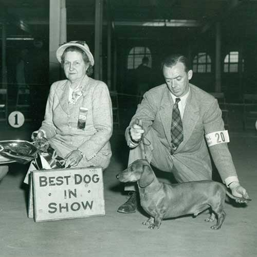
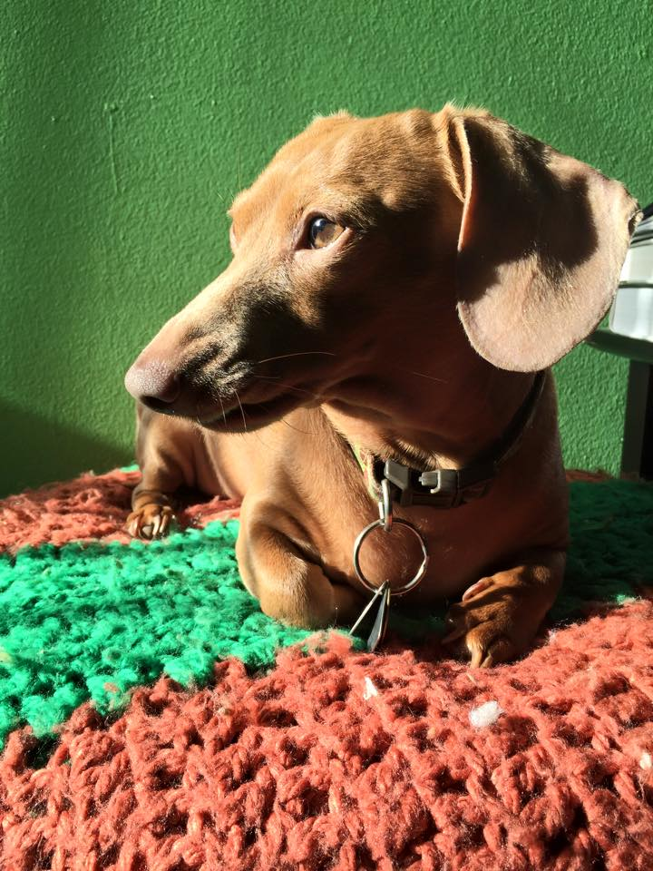
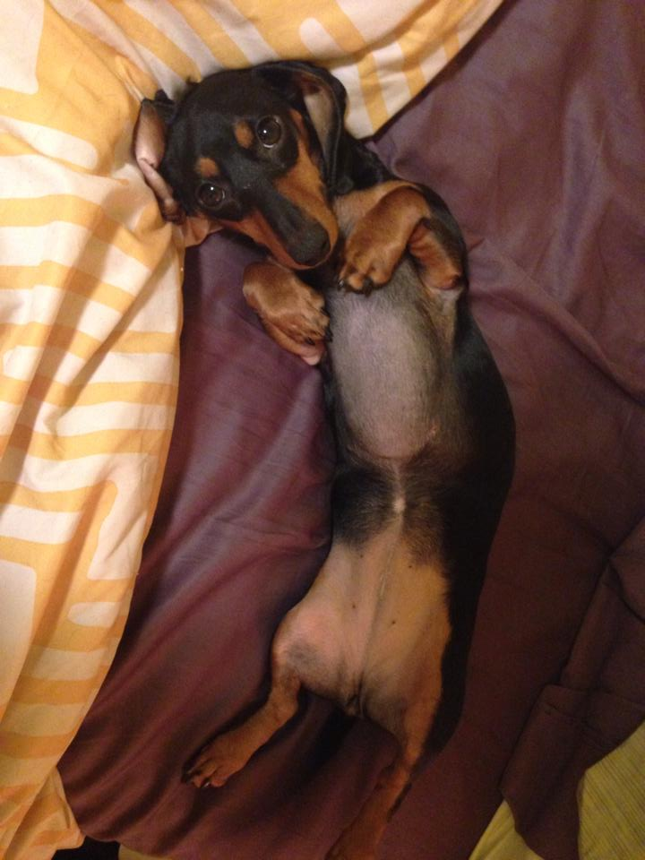

History of Dachshunds
Documents from the 16th century mention the names "earth dog", "badgercreeper", and "dachshel". Before standardization of the breed, dachshunds varied more in size based on prey that they were hunting. They weighed anywhere from 5-35lbs.
In 18th and 19th century people started seriously refining the breed, specifically to be badger hunters.
A timeline of dachshunds:
the breed standard was written in 1879
arrow_forward
arrow_forward
German Dachshund club was founded in 1888
Dachshund Club of America was founded in 1895
arrow_forward


arrow_forward
Durring WWI dachshunds became unpopular and were tied to German sentiment. They were kicked and stoned in the streets. WWII produced similiar views on the dachshund but to a lesser degree.
Popularity of dachushunds rose in the 1950's
arrow_forward



Today they are considered more of a family dog in most cultures. But in France and other parts of Europe they are still considered effective hunting dogs.
arrow_forward